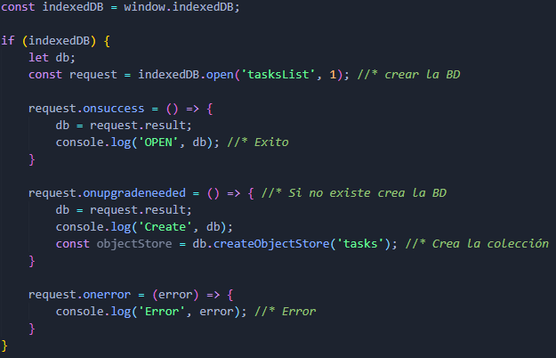
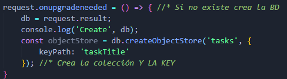
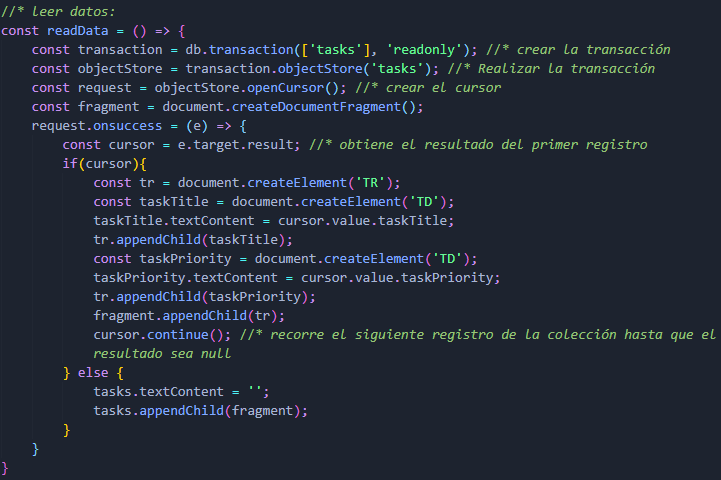

API IndexedDB
IndexedDB es una API de bajo nivel que ofrece almacenamiento en el cliente de cantidades significativas de datos estructurados, incluyendo archivos y blobs. Para búsquedas de alto rendimiento en esos datos usa índices. Mientras DOM Storage es útil para el almacenamiento de pequeñas cantidades de datos, no es útil para almacenar grandes cantidades de datos estructurados. IndexedDB proporciona una solución.
- Es una base de datos indexada y es una manera persistente de almacenar datos en el navegador.
- Almecena pares clave-valor. Los valores pueden ser objetos con estructuras complejas y las claves pueden ser propiedades de esos objetos.
- Es mayormente asíncrona.
- Usa eventos DOM para notificar cuando los resultados están disponibles.
- Es orientada a objetos.
Creación:
- Crear la base de datos a través del objeto IndexedDB y el método open().
- Comprobar si la base de datos existe o tiene que ser creada a través del método onupgradeneed().
- Crear colección de objetos con el método createObjectStore().
- Se debe crear una Key para posteriormente poder añadir registros. Esto se puede mediante autoincrement: True o por medio de KeyPath.
- Escuchar los eventos de éxito y de error con los métodos onsucces() y onerror().
Primer creación:
Ajuste con la creación de la Key:
Añadir datos:
- Crear una transacción en la bd mediante el método transaction(['colección'], 'metodo'). Sus parámetros son: la coleccion de datos donde se añadira el registro y el método 'readwrite'.
- Realizar la transacción mediante el método objectStore('colección').
- Añadir el registro mediante el método add().

Leer datos:
- Crear una transacción en la bd mediante el método transaction(['colección'], 'metodo'). Sus parámetros son: la coleccion de datos que se quieren leer y el método 'readonly'.
- Realizar la transacción mediante el método objectStore('colección').
- Crear un cursor (recorre cada uno de los objetos en la colección y devuelve el valor) mediante el método openCursor().
- Inicalmente el cursor solo lee el primer registro, por lo que mediante un onsucces() del request se ajusta el cursor para leer todos los registros mediante el metodo continue().

| Task | Priority |
|---|